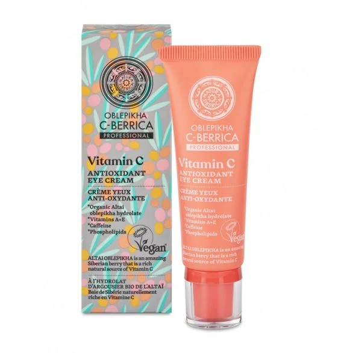

POCETNA
O NAMA
PROIZVODI
KONTAKT
NAPRAVI NALOG

Krema za predeo oko ociju
Opis: Osvetljujuća krema za oči smanjuje podočnjake i oticanje, dok istovremeno hidrira i osvežava delikatnu kožu oko očiju. Kombinacija kofeina i vitamina K vraća energiju i blistavost vašem pogledu.
Ključni Sastojci: Kofein, vitamin K, ekstrakt krastavca.
Upotreba: Nanesite malu količinu kreme oko očiju ujutro i uveče, lagano tapkajući prstima dok se ne upije.